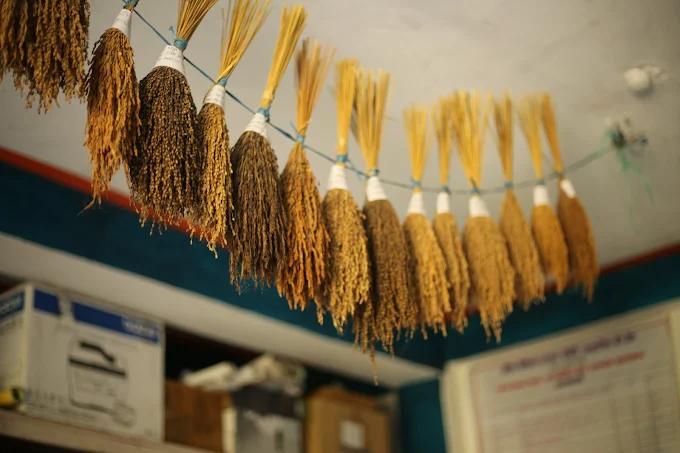
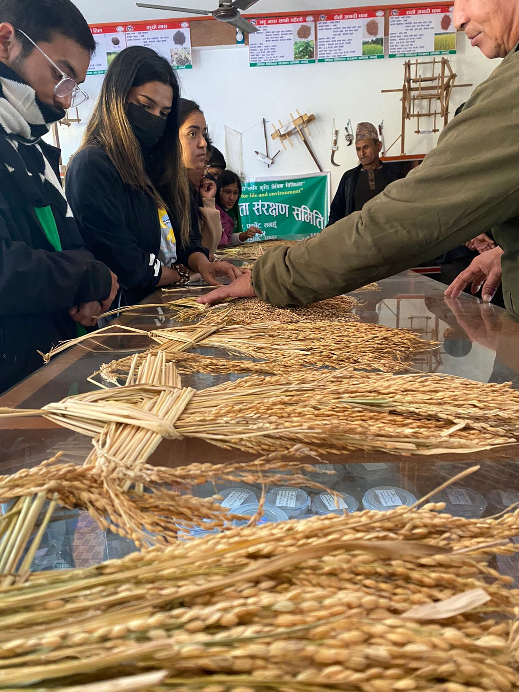
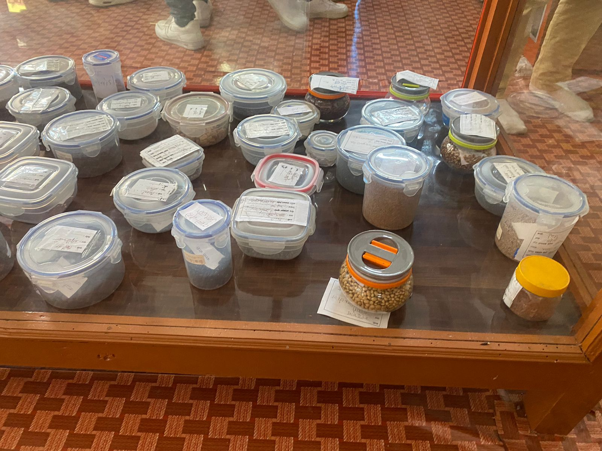
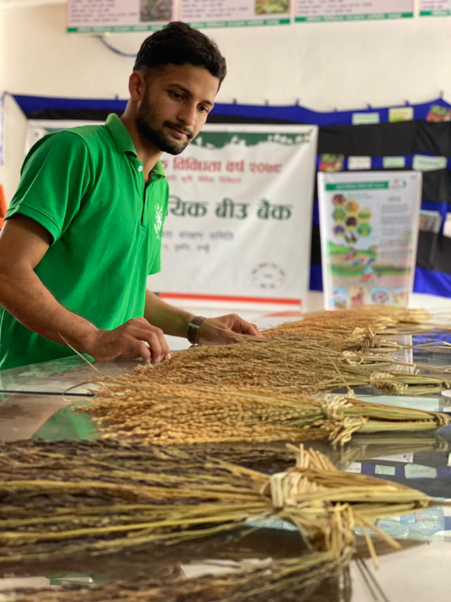
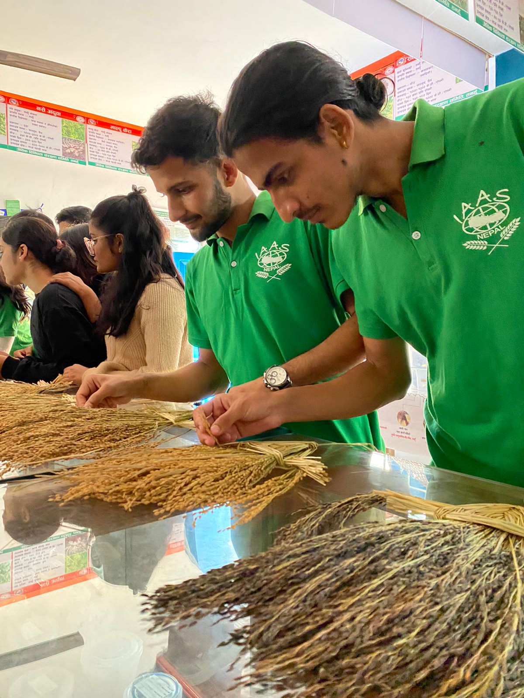
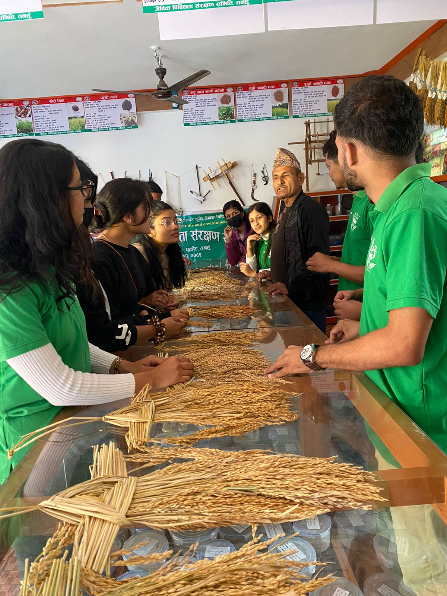

BaisJagar, Bhanu, Tanahu, Gandaki — Academic Exchange Visit
During the tenure of the Local Director, IAAS LC Lamjung, the team conducted an academic exchange visit to the Purkot Community Seed Bank (CSB) located in BaisJagar, Bhanu, Tanahu, Gandaki. This visit aimed to study the community-driven approach to biodiversity conservation, focusing on maintaining traditional landraces, seed preservation, and sustainable agricultural practices.
The CSB serves as a crucial hub for local farmers, promoting seed sharing, safeguarding genetic diversity, and enhancing community resilience. The visit allowed participants to engage with local custodians, document conservation methods, and understand the socio-ecological impacts of community-managed seed systems.
Led the academic exchange visit, engaging with CSB staff and local farmers. Documented landrace varieties, evaluated seed conservation practices, and provided recommendations for enhancing community seed management.
Collected detailed data on biodiversity, cropping patterns, and seed storage methods. Contributed to reports emphasizing the role of CSB in conserving traditional seeds and supporting sustainable livelihoods.





